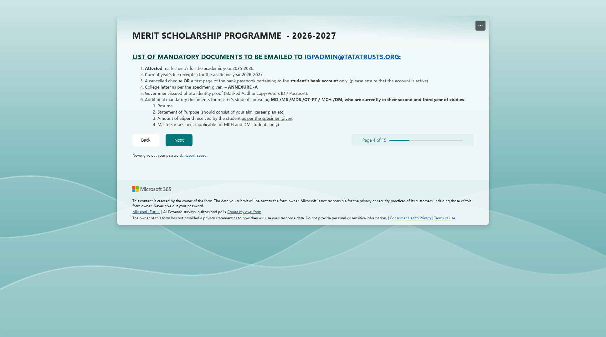
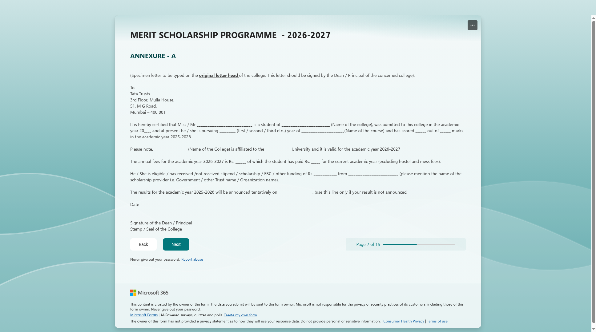
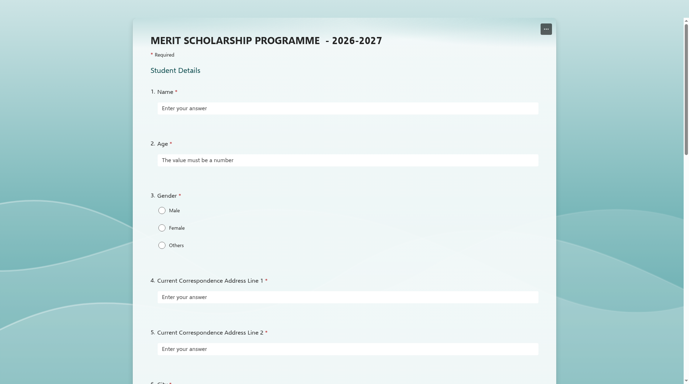
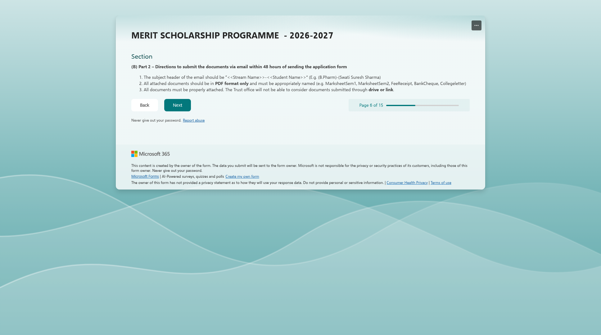

Tata Trusts merit scholarship for medical and healthcare students
The 2026-27 call is open for specified undergraduate and postgraduate streams, including MBBS, nursing, dentistry, physiotherapy and pharmacy. Kerala students are included in the live form's state list.
Official scholarship page ↗ Read the current guidelines PDF
Who can apply?
This is not a general scholarship for every degree. Check your exact stream, year and previous-year marks against the sponsor's table. Bachelor's students can apply only after completing their first year; the listed master's streams start from the first year. Current interns are not eligible.
Bachelor's streams, after first year
| Stream | Previous academic year cutoff |
|---|---|
| MBBS | 75% |
| Bachelor of Nursing | 70% |
| Bachelor of Dentistry | 70% |
| Bachelor of Physiotherapy / Occupational Therapy | 70% |
| Bachelor of Pharmacy | 80% or 8.5 CGPA |
Master's streams, from first year
| Stream | Guideline cutoff |
|---|---|
| Master of Physiotherapy / Occupational Therapy | 70%*; the PDF labels the qualifying result “MPTH / MOTH Final year” |
| Master of Nursing | 70% |
| Master of Dentistry | 70% in BDS final year* |
| M.Sc. in Pharmacy / M.Pharm / PharmD | 80% or 8.5 CGPA |
| MD, MS, M.Ch., DM | 70% in MBBS final year* |
*The PDF says its starred percentage cutoff applies only to first-year students. It uses unusual wording for the physiotherapy/occupational-therapy qualifying result. Check the exact table in the PDF and ask the Trust if your qualification does not fit clearly; do not substitute a different qualifying degree by assumption.
The directions exclude students whose fees are already supported through a stipend, grant or scholarship from their institute or another organisation. Later-year MD/MS/MDS/OT-PT/M.Ch./DM applicants are asked for extra documents and may be interviewed. If your funding status is unclear, ask the Trust before applying.
How much support?
The current call does not state a fixed scholarship amount, a fixed number of awards or an income ceiling. Do not read a fixed cash promise into it. Selection and the award decision belong to Tata Trusts.
1. Prepare documents before opening the form
- College-attested marksheets for 2025-26.
- 2026-27 fee receipts where fees have been paid, bearing the college's stamp and signature.
- Cancelled cheque or first page of an active bank passbook.
- College letter in the exact Annexure A format on original college letterhead, signed by the Dean/Principal with stamp/seal.
- Government-issued photo ID: masked Aadhaar, voter ID or passport, as listed in the guide.

Required-document list and student-account wording. Official sponsor-linked Microsoft Form, 25 November 2026. Blank public pages only. Full-HD desktop capture; tap to enlarge.
Extra documents for specified later-year master's students
Second/third-year MD/MS/MDS/OT-PT/M.Ch./DM students must also prepare a resume, statement of purpose, stipend information in the prescribed specimen and a master's marksheet for M.Ch./DM where required. The FAQ says to provide the bachelor's final-year marksheet where the current master's course has no exam until its end. Do not assume these extra requirements apply to every applicant.
2. Get the college letter right
Use Annexure A from the PDF, not a self-made certificate. It records admission year, current year/course, previous marks, affiliation, annual fee and fee paid excluding hostel/mess, and any stipend or other funding. Keep the funding line even when the amount is nil or zero. Use the result-awaited line only if your result is pending.

Annexure A college-letter specimen. Official sponsor-linked Microsoft Form, 25 November 2026. Blank public pages only. Full-HD desktop capture; tap to enlarge.
3. Complete the official online form
- Start at the sponsor's Education Grants page, select Medical and Healthcare Scholarship, read the current PDF and use its application link.
- The sponsor-linked Microsoft Form opens with privacy and instruction pages. It showed 15 pages in total in our check. Use Next after reading each page.
- Prepare the information the privacy note lists: identity/contact details, family income, education and bank information. The blank Student Details section asks for name, age, gender, correspondence/permanent address, state and phone numbers. Kerala is available in the state list.
- Choose only your actual stream. Follow the remaining required sections in the live form; we did not enter personal details or inspect the later data-dependent sections.
- Review everything, then submit once, before the deadline. The sponsor says the form cannot be saved/downloaded, must be completed in one sitting, and cannot be accessed after submission. Duplicate or dummy applications can invalidate all applications.
We inspected the public instruction pages and the blank Student Details page only. No answers, application, documents or email were submitted. The acknowledgement step below is described by the official guide, not tested by us.

Blank Student Details section, with no personal information entered. Official sponsor-linked Microsoft Form, 25 November 2026. Blank public pages only. Full-HD desktop capture; tap to enlarge.
4. Email all documents within 48 hours
The official guide says a successful form submission displays an acknowledgement and document-sending directions. Record those directions. Within 48 hours of submitting the form, send one email to igpadmin@tatatrusts.org, with the stream name and student name in the subject. Attach clearly named PDF files, not Drive links or other file-sharing links. Avoid multiple emails for the same application.

Live directions for one document email within 48 hours. Official sponsor-linked Microsoft Form, 25 November 2026. Blank public pages only. Full-HD desktop capture; tap to enlarge.
If results are delayed
Eligible students with delayed results should still submit the form and other documents by the normal deadlines. The guide allows the pending marksheet to follow by 15 February 2027, provided the student meets eligibility. That is not an extension of the online application deadline. After that marksheet date, the guide says the application will be treated as withdrawn.
Queries and outcome
Use igpadmin@tatatrusts.org for application questions, with your stream name followed by “Query” in the subject. Ask specifically about unresolved bank-account, qualifying-result or stipend issues. Decisions are communicated by email. Shortlisted specified later-year master's students may have an online interview; the guide says its dates cannot be rescheduled. The Trust says it has no intermediaries or agents.
English and Malayalam videos
No reliable current-cycle English or Malayalam full application walkthrough was verified. Use the sponsor PDF and its own form instructions. Do not use an older video's deadline or invent answers just to reach a later page.
മലയാളത്തിൽ ചുരുക്കം
Tata Trusts Medical & Healthcare Merit Scholarship 2026-27 നിർദിഷ്ട മെഡിക്കൽ/ഹെൽത്ത്കെയർ കോഴ്സുകൾക്കാണ്. ബിരുദ വിദ്യാർത്ഥികൾ ഒന്നാം വർഷം പൂർത്തിയാക്കിയിരിക്കണം; നിർദിഷ്ട ബിരുദാനന്തര കോഴ്സുകളിൽ ഒന്നാം വർഷം മുതൽ അപേക്ഷിക്കാം. ഇന്റേൺഷിപ്പ് ചെയ്യുന്നവർക്ക് അപേക്ഷിക്കാനാവില്ല. ഓൺലൈൻ അപേക്ഷ 2026 ഡിസംബർ 9 വൈകിട്ട് 6 മണിക്കകം നൽകണം. തുടർന്ന് 48 മണിക്കൂറിനകം ആവശ്യമായ PDF രേഖകൾ ഒറ്റ ഇമെയിലായി അയയ്ക്കണം. മാർക്കും കോഴ്സും വർഷവും ഔദ്യോഗിക പട്ടികയുമായി പരിശോധിക്കുക. ബാങ്ക് അക്കൗണ്ടിനെക്കുറിച്ച് PDFയിലെ രേഖാപട്ടികയും FAQയും തമ്മിൽ വ്യത്യാസമുണ്ട്; സ്വന്തം അക്കൗണ്ട് ഇല്ലെങ്കിൽ Trustനോട് വ്യക്തത തേടുക. നിശ്ചിത തുക ഉറപ്പുനൽകിയിട്ടില്ല. ഇത് നേരത്തെ നൽകിയ Means Grant പോസ്റ്റിൽ നിന്ന് വ്യത്യസ്തമാണ്.